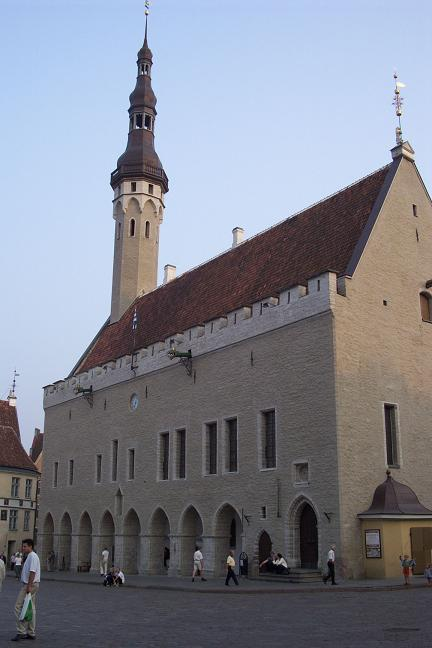
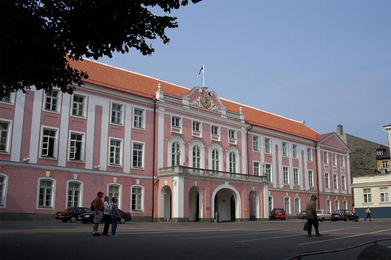
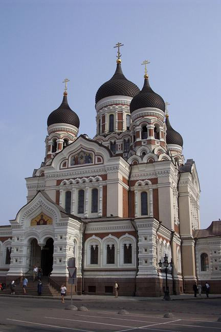
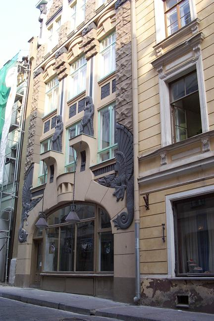
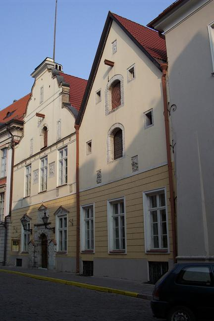
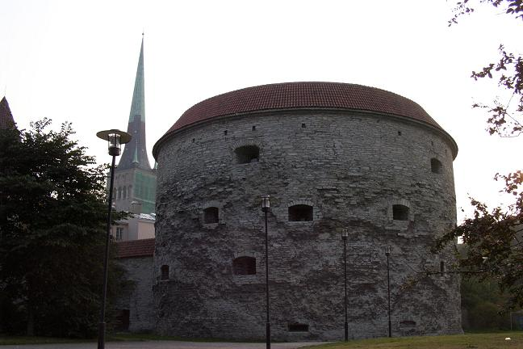

The first picture is of Tallinn’s Town Hall, the best-preserved medieval municipal building in northern Europe, located in the main square (Raekoja plats) within the old city. The original Gothic structure dates back to the early 1200s, but it was reconstructed in the early 1400s.

The second picture shows the 18th century pink Parliament building, located next to the 13th century Danish castle that stood in Toompea, a fortified hill. While nothing of the original castle remains, three of four corner towers do, dating back to the 14th century.

The third picture is of Alexandr Nevsky Russian Orthodox church, a relatively recent (19th century) structure on Toompea.

The next two pictures are two of many 16th century or earlier buildings, in this case the Brotherhood of Blackheads (a society of unmarried, mainly foreign merchants) and St. Olaus’ Guild. Notice how goods were lifted up from the street – the same way as can be seen in the houses of Amsterdam, for instance.


The final picture is of the cannon tower of Fat Margaret, which was built to protect the harbor and to guard the medieval entry point from the port to the Old City. The tower has also served as a storehouse for gunpowder and weapons and as a prison, but now houses the Estonian Maritime Museum.

Back to the Estonia Section
Go to the Homepage